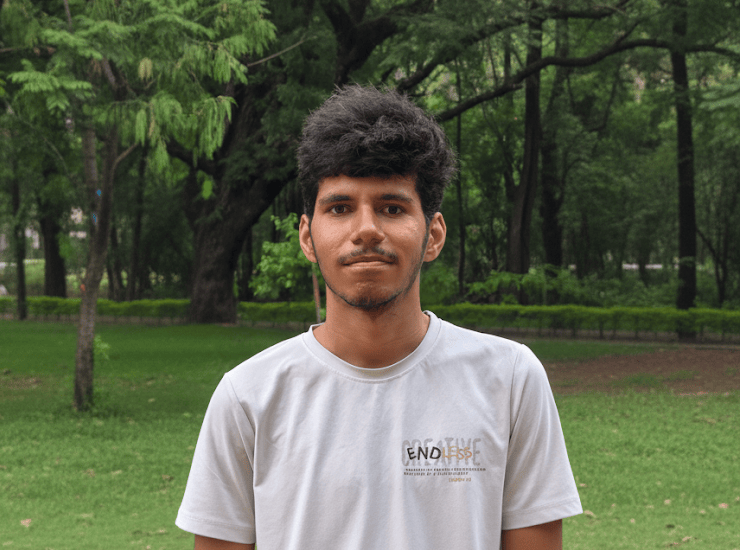

Shobhnik Kriplani

Hi! I am a third-year undergrad pursuing Math & Computing at the Indian Institute of Science, Bangalore. My primary research interests lie in reasoning, alignment, and safety in Language Models.
I'm currently working on AI safety research under the guidance of Prof. Haohan Wang, focusing on improving the robustness and reliability of large language models against adversarial attacks and misuse.
Previously, I worked under the guidance of Prof. Chandan Reddy (VT) and Prof. Amrit Singh Bedi (UCF), where I contributed to SurfaceBench, a large-scale benchmark for evaluating the ability of self-evolving language models to recover symbolic equations of 3D scientific surfaces, and conducted research on inference-time alignment and reward hacking in LLMs, focusing on mathematical analysis of decoding methods like Best-of-N, Controlled Decoding, and related optimization techniques.
My research journey began at the DACAS Lab under Prof. Jishnu Keshavan, where I developed a framework for solving inverse robot kinematics using Invertible Neural Networks (INNs), achieving significant improvement in accuracy.
News
| Feb, 2026 | Our paper SurfaceBench has been accepted to TMLR! |
|---|---|
| Jan, 2026 | Exited to start my Research Internship at the University of Illinois Urbana-Champaign! |
| Dec 8th, 2025 | Presented our work on MentorX, a Personalised AI-Tutor, at CASML Conference! |
| Dec 5th, 2025 | Presented our work NanoAgent at Salesforce, Bangalore! |
| Nov, 2025 | My Virginia Tech internship project SurfaceBench: Can Self-Evolving LLMs Find the Equations of 3D Scientific Surfaces? is now on arxiv! |
| July, 2025 | Exited to start my Research Internship at Virginia Tech! |
| May, 2025 | Exited to start my Research Internship at SAFERR AI Lab, University of Central Florida! |
| Dec, 2024 | Started working as a Research Intern at DACAS Lab, IISc Bangalore! |
| Aug, 2023 | Joined the Indian Institute of Science, Bangalore as an Undergrad student in Mathematics and Computing. |